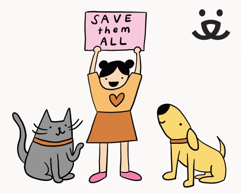

| INICIO | GATOS | PERROS | NOSOTROS | CONTACTO |
"En CatDog, creemos en la importancia de la tenencia responsable de mascotas. Cada adopción cambia vidas: al adoptar, no solo das un hogar amoroso, sino que también salvas una vida. Los perros y gatos merecen un futuro lleno de amor y cuidado. Adoptar es una decisión responsable que reduce el número de animales abandonados y promueve la felicidad animal. Recuerda: un hogar no está completo sin una mascota. Únete a nosotros en nuestra misión de hacer del mundo un lugar mejor para todas las criaturas. ¡Adopta hoy y cambia una vida, la tuya y la de ellos!"
 |
"Adopta una mascota. Encuentra amor incondicional y compañía. Cambia una vida, incluyendo la tuya. Haz la diferencia hoy." |
 |